Gallery!
 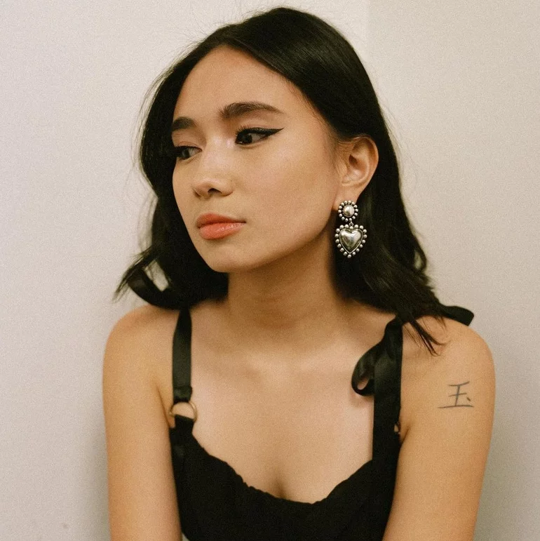
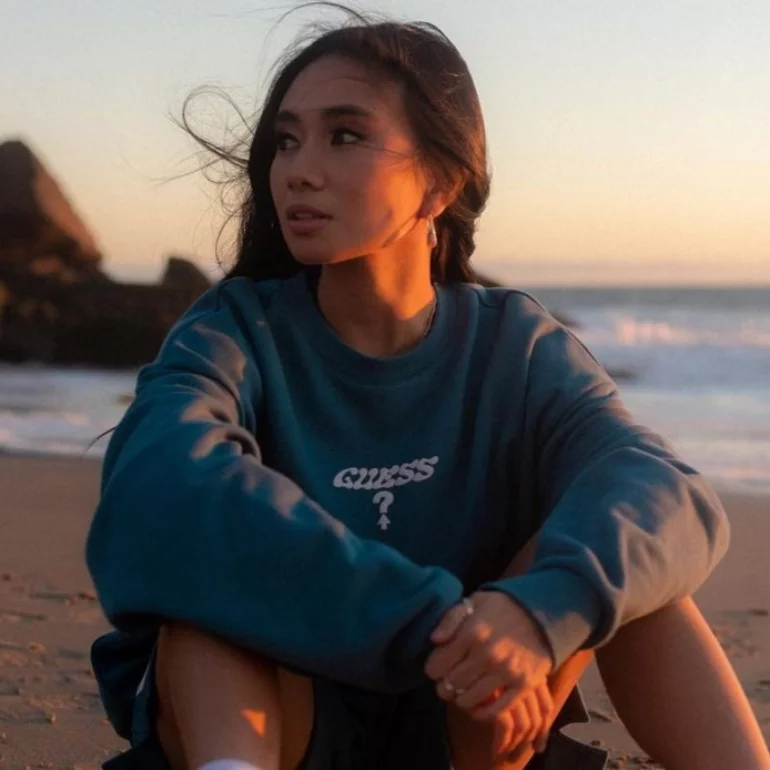
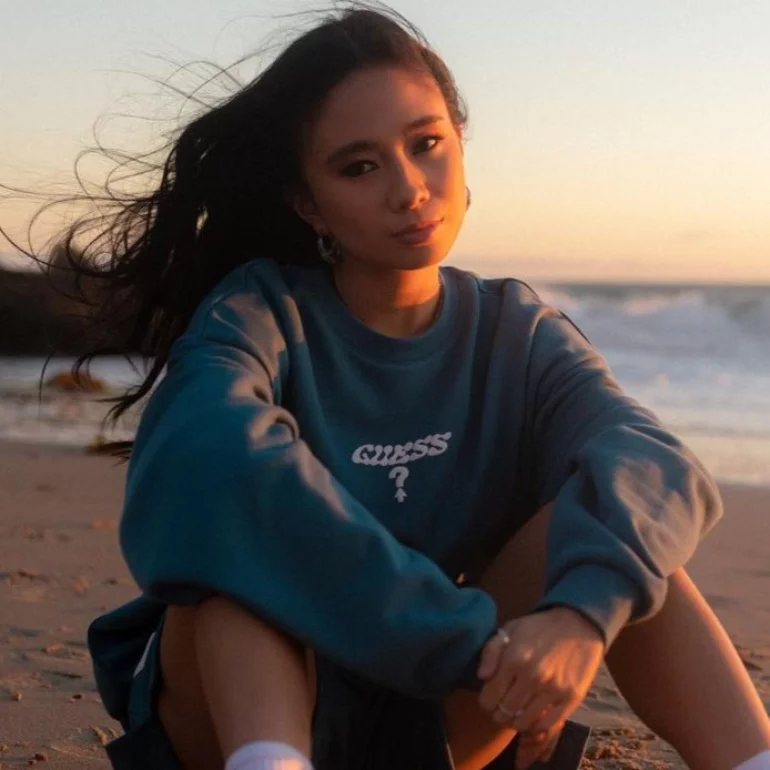
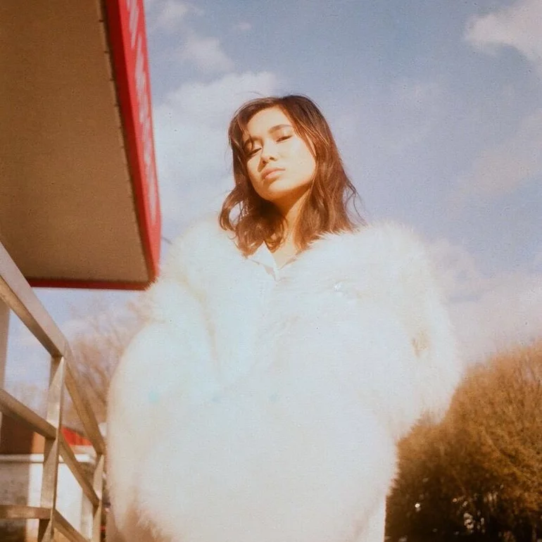
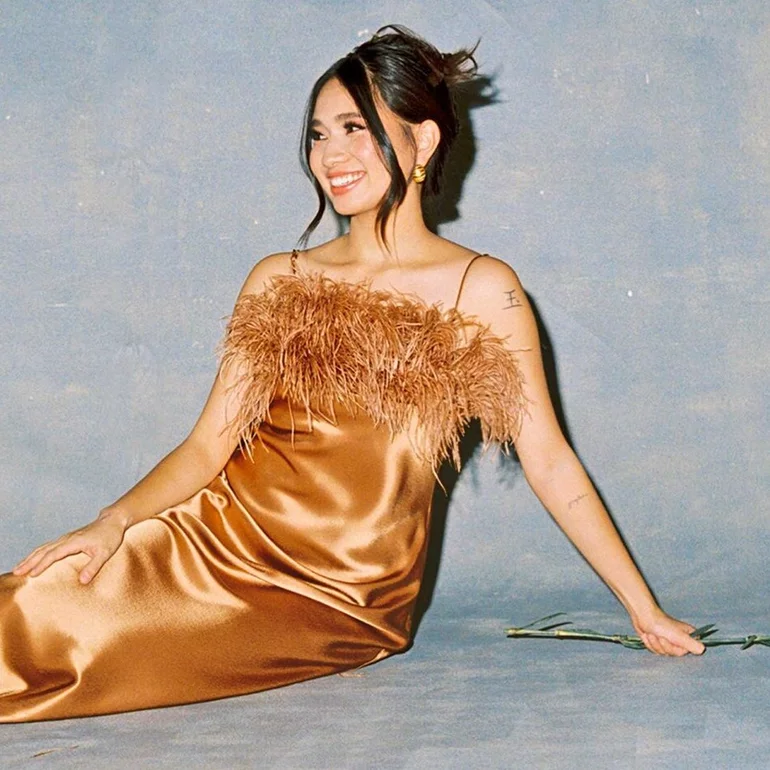
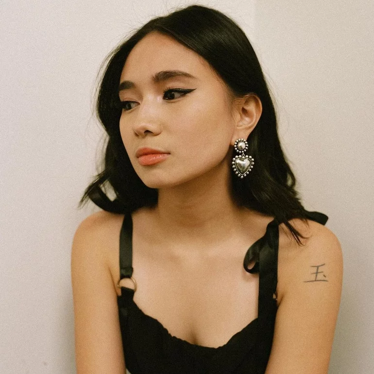
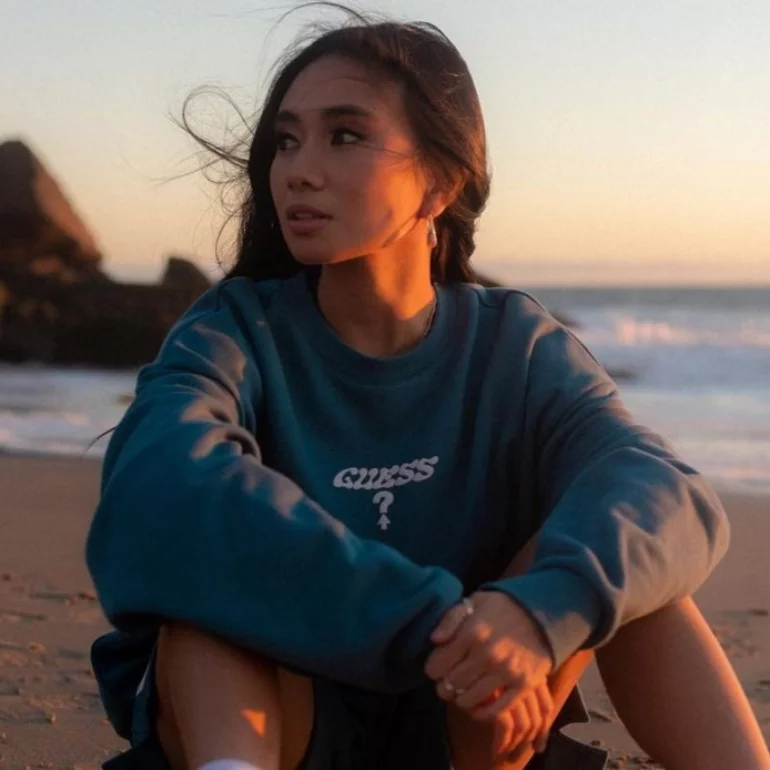
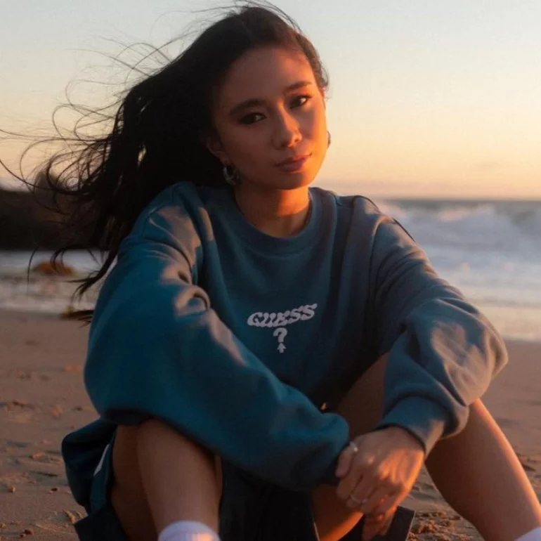
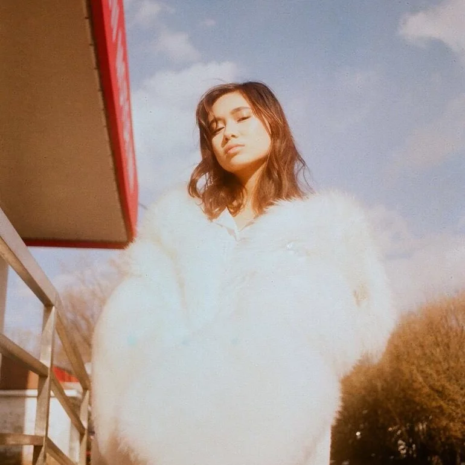
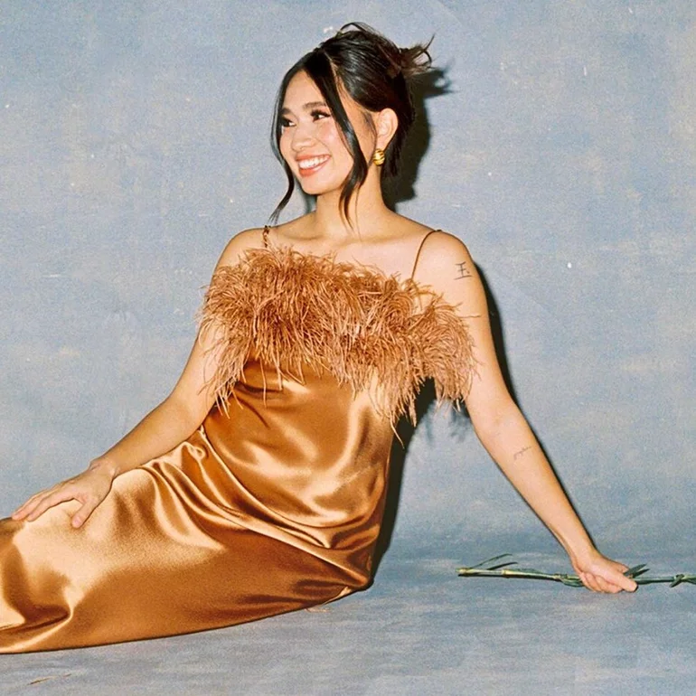
NIKI Zefanya, known professionally as NIKI, is an Indonesian singer-songwriter and musician. She was born on January 24, 1999, in Jakarta, Indonesia. She began her musical journey at a young age, taught herself to play guitar and write songs, eventually winning a contest to open for Taylor Swift at age 15. In 2014, NIKI started posting her music on YouTube, quickly gaining 40,000 followers. 23 years later, she transitioned from a self-made artist to a prominent figure in the music industry, achieving over a billion streams and making history as the first Indonesian artist to perform at Coachella.
Her debut album, Moonchild, released in 2021, showcased her exploratory sound and songwriting abilities, while her second album Nicole, released in August 2022, is a deeply personal project reflecting her growth and experiences. NIKI is signed to 88rising, a management company that promotes Asian-American artists, and actively works to change the landscape for aspiring young musicians. In 2024, she released her third album, Buzz, which further explores themes of self-acceptance and personal growth, showcasing a more mature sound and lyrical depth, inspiring a new generation of artists while staying true to her roots.
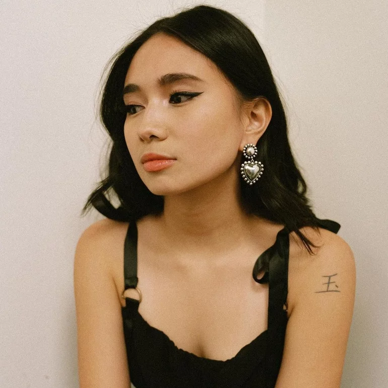
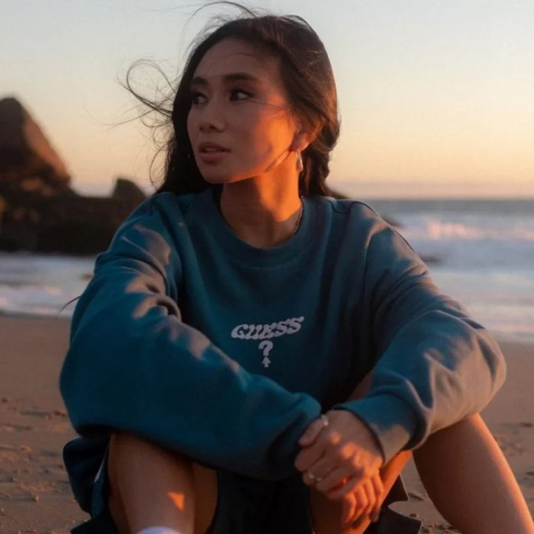
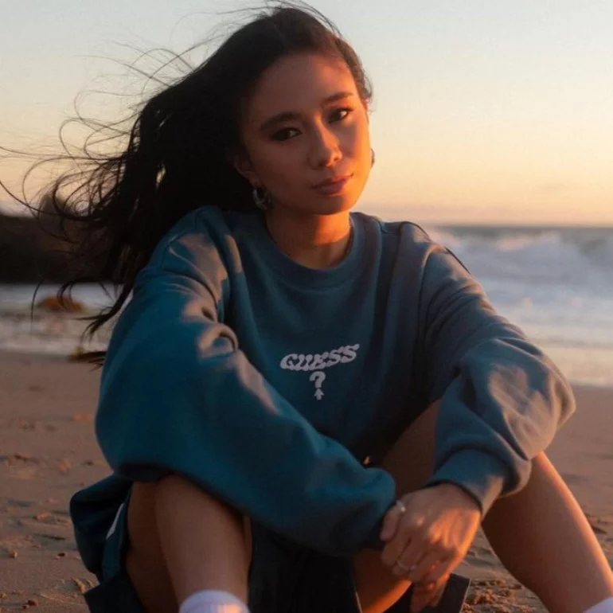
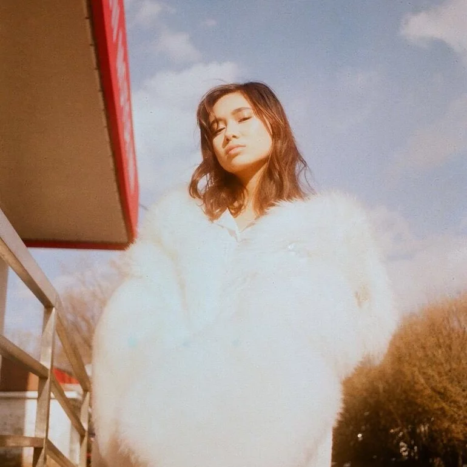
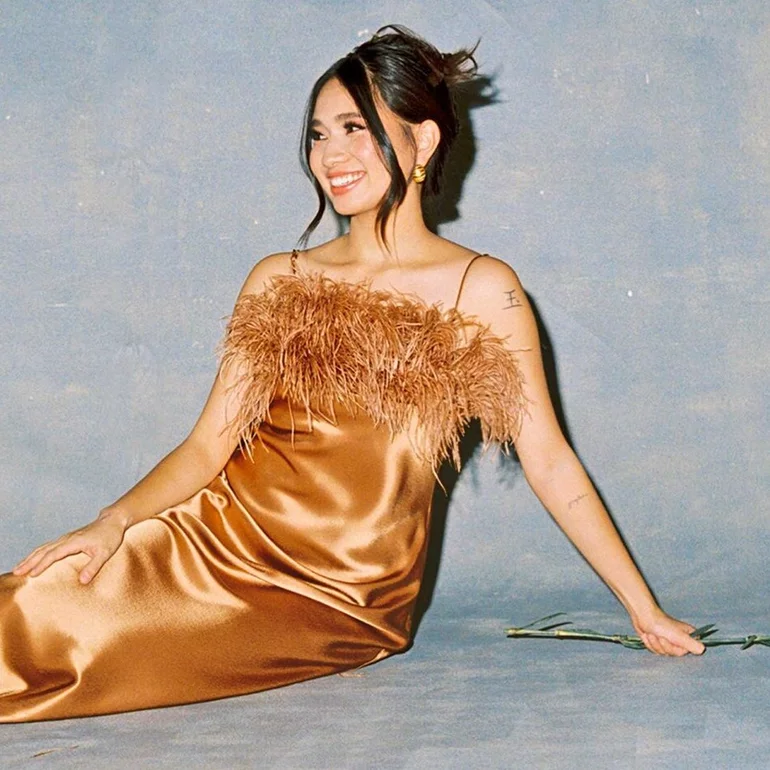
copyright © 2024 Felicia N. Chang. All Rights Reserve